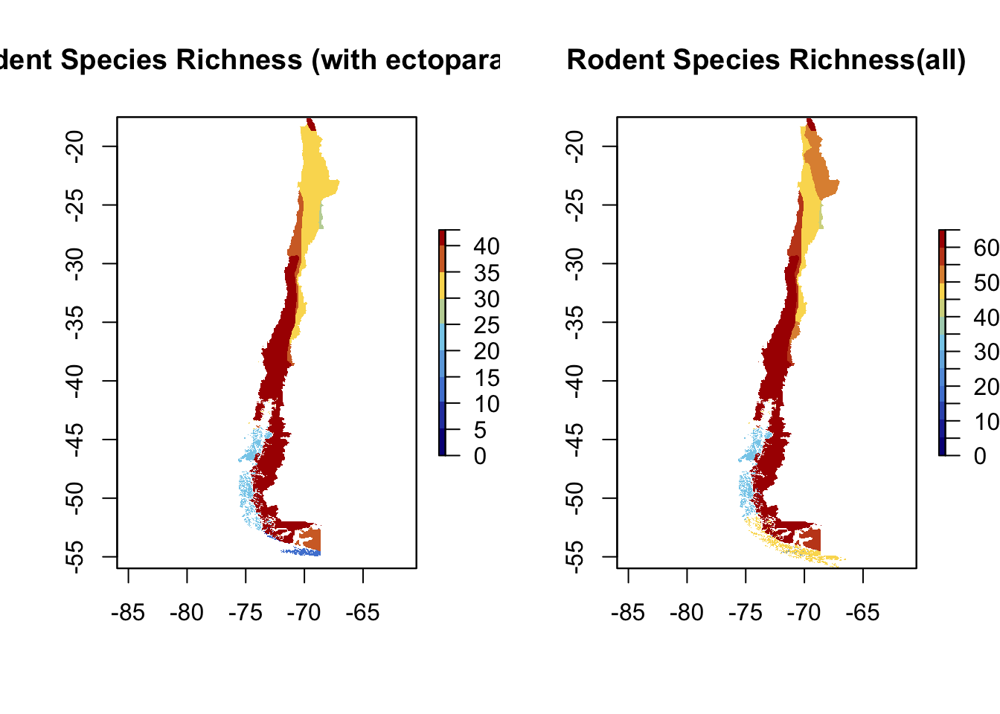

Purpose: Create species richness maps of the rodents of Chile for all rodent species and for only rodent species that have ectoparasite associations. Also, create pairwise matrices for the geographic range overlap and geographic range distance for rodent species that have ectoparasite associations. The matrices will be used in further analysis.
First, load the packages.
Set the directory to where files are, and read in shape files. The file being read in as rodrange is a shapefile with polygons of ranges for 65 rodent species in Chile from IUCN. From this, the rodents which do not have ectoparasites are being excluded and named “ectorodents”.
rodrange <- read_sf("./ChileRodentsClipped/mergedChile.shp", stringsAsFactors = F)
ectorodents <- subset(rodrange, SCI_NAME !="Akodon iniscatus" & SCI_NAME != "Abrothrix jelskii"
& SCI_NAME !="Auliscomys pictus" & SCI_NAME != "Calomys lepidus"
& SCI_NAME !="Cavia tschudii" & SCI_NAME != "Chelemys megalonyx"
& SCI_NAME !="Chinchilla chinchilla" & SCI_NAME != "Chinchilla lanigera"
& SCI_NAME !="Ctenomys coyhaiquensis" & SCI_NAME != "Eligmodontia morgani"
& SCI_NAME !="Euneomys petersoni" & SCI_NAME != "Galea musteloides"
& SCI_NAME !="Galenomys garleppi" & SCI_NAME != "Geoxus annectens"
& SCI_NAME !="Lagidium wolffsohni" & SCI_NAME != "Microcavia australis"
& SCI_NAME !="Microcavia niata" & SCI_NAME != "Microtus juldaschi"
& SCI_NAME != "Neotomys ebriosus"
& SCI_NAME !="Octodon pacificus" & SCI_NAME != "Oligoryzomys magellanicus"
& SCI_NAME !="Ondatra zibethicus" & SCI_NAME != "Phyllotis limatus")Now, we will read to read in the shapefile of Chile, create a raster object, and then rasterize the rodent polygons and the Chile polygon.
chile <- read_sf("./CHL_adm/CHL_adm0.shp") #Chile
r <- raster(ncol=900, nrow=900) #create a raster object
extent(r) <- extent(chile) # set the extent of chile to the extent of the raster object
poly<-ectorodents ## create a new spatial object of the ectorodents
rp_rod<-rasterize(poly,r) #rasterise the poly to the extent of the raster object
chil_map_ecto<-mask(rp_rod, chile) # mask all the areas outside of chile
poly3<-rodrange #all rodents same steps
rp_rod3<-rasterize(poly3,r)
chil_map<-mask(rp_rod3, chile)Now time to make the maps!
color<-colorRampPalette(c("gray","lightblue","skyblue", "darkblue")) #make a color ramp
par(mfrow=c(1,2)) #split panel into 2
plot(chil_map_ecto, col=color(10), breaks=c(0,5,10,15,20,25,30,35,40,43)
,ext=c(-80, -65, -60, 30), main="Rodent Species Richness (with ectoparasites)" ) #only with ectoparasites
plot(chil_map, col=color(14), breaks=c(0,5,10,15,20,25,30,35,40,45,50,55,60,65)
,ext=c(-80, -65, -60, 30), main="Rodent Species Richness(all)" ) #all rodents
The next step is to calculate pairwise range overlap between rodent species. We will do this only for the rodents with ectoparasites
sf::sf_use_s2(FALSE) #turn off spherical geometry## Spherical geometry (s2) switched offectogeom<- st_sfc(ectorodents$geometry)
overlap<- lapply(ectogeom, function(x){
lapply(ectogeom, function(y) st_intersection( x, y ) %>% st_area(x,y)/(st_area(x)+st_area(y)-st_area(x, y)) )
})
geolap<- matrix(unlist(overlap), ncol = length(ectorodents$geometry), byrow = TRUE)
colnames(geolap)<- ectorodents$SCI_NAME
rownames(geolap)<- ectorodents$SCI_NAME
write.csv(geolap, "OverlapMatrix.csv")Calculate the distance between range centroids for pairs of rodents and write a csv file with the distance matrix. The centroid distance matrix will be used in the ectoparasite sharing analysis and in the mantel tests to assess how range distance relates to measures of network distance.
ectorodents <- ectorodents %>% mutate(centroids = st_centroid(st_geometry(.)))
geodist<- ectorodents %>% st_set_geometry('centroids') %>% st_distance()
colnames(geodist) <- ectorodents$SCI_NAME
row.names(geodist)<- ectorodents$SCI_NAME
df<- as.data.frame(geodist)
write.csv(df, "CentroidDist.csv")